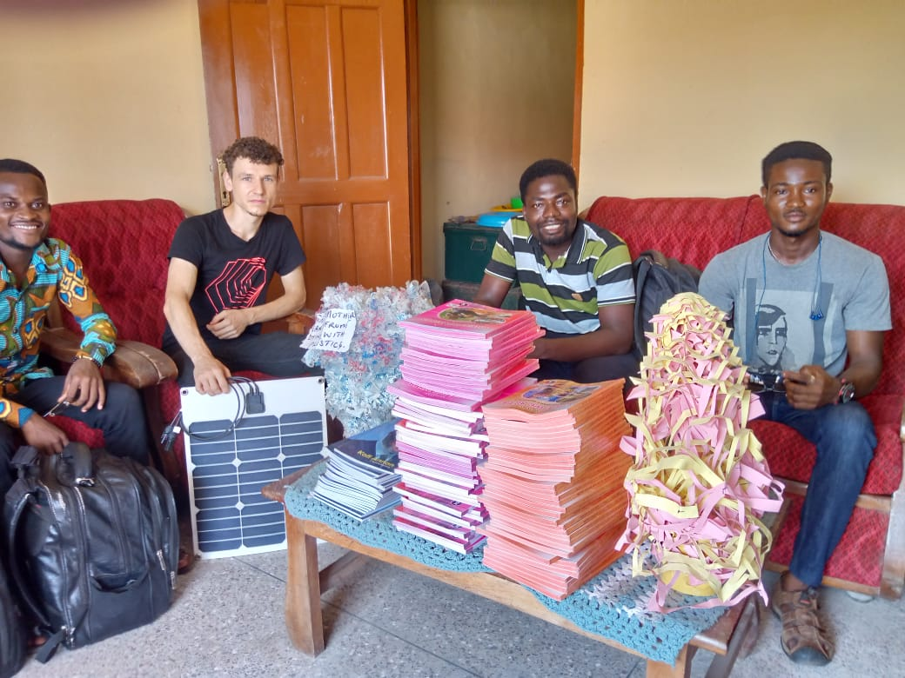
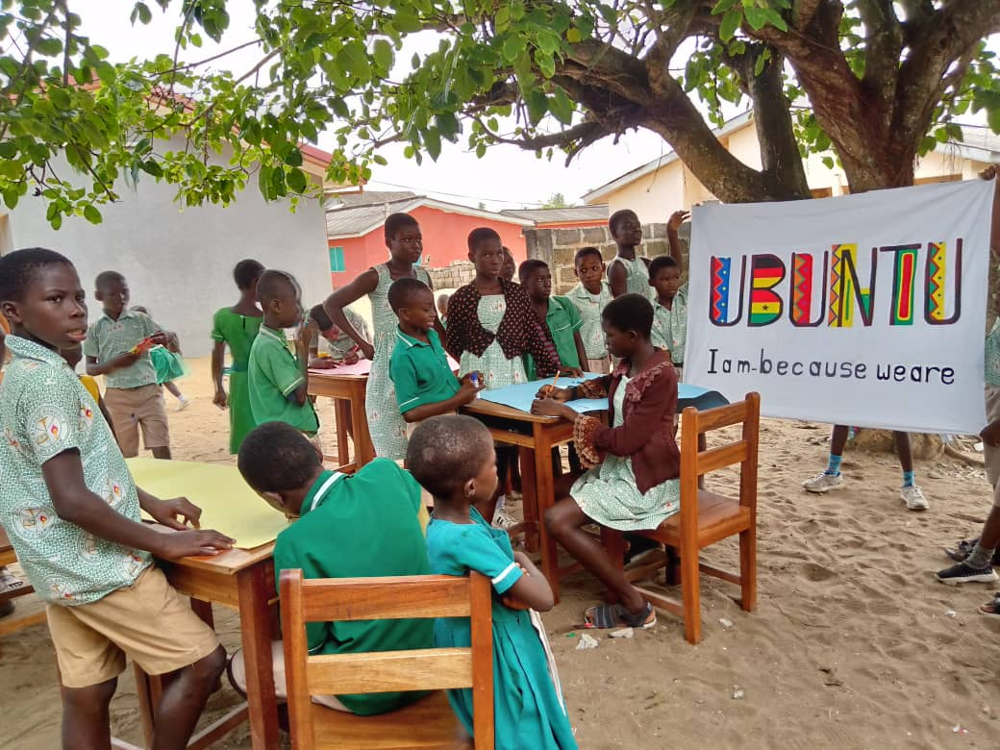
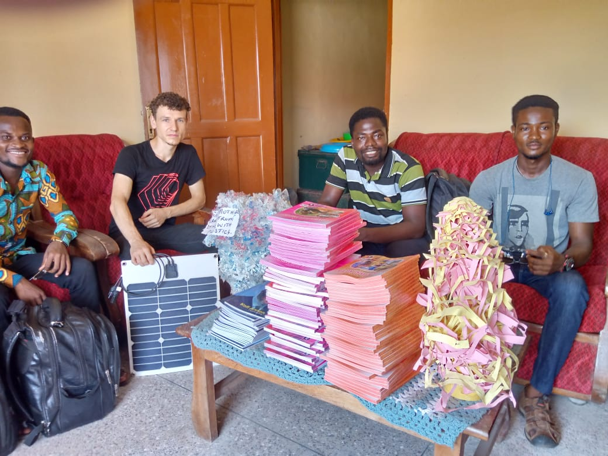
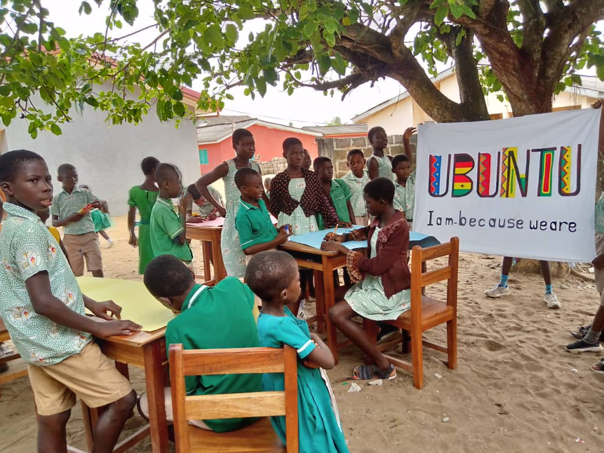
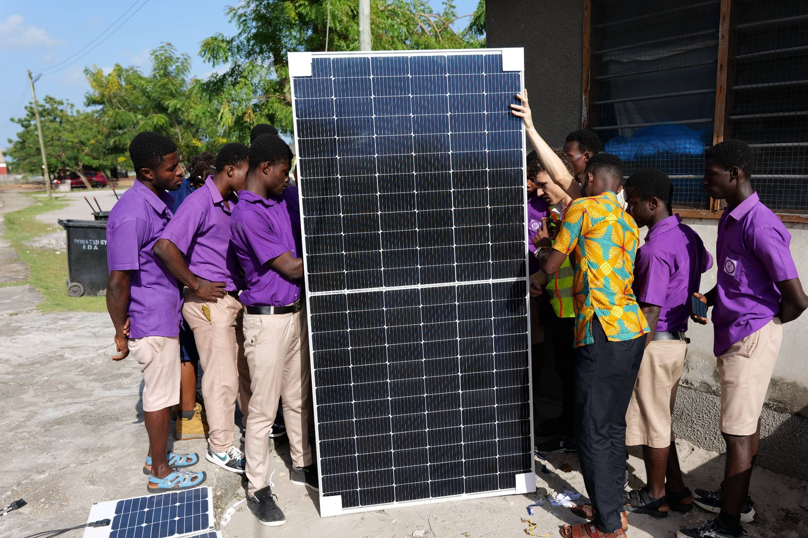
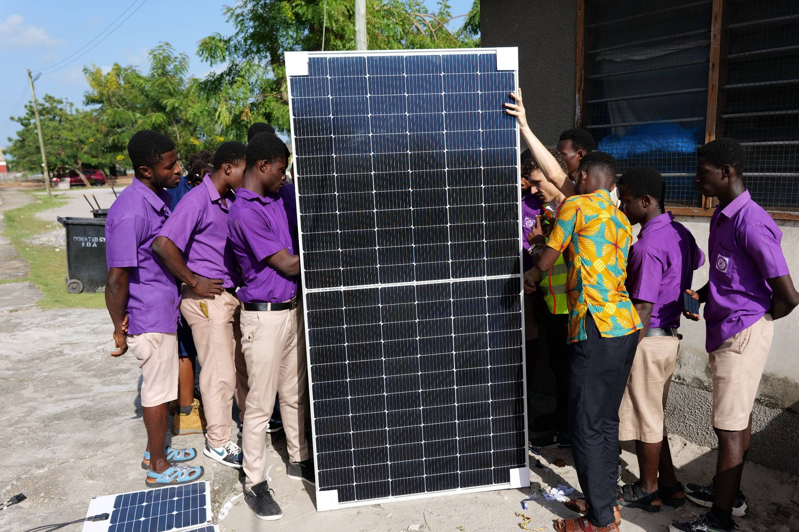
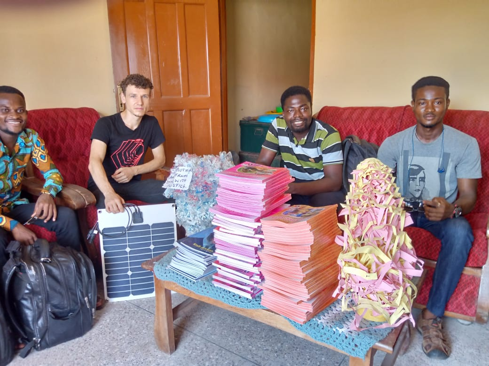
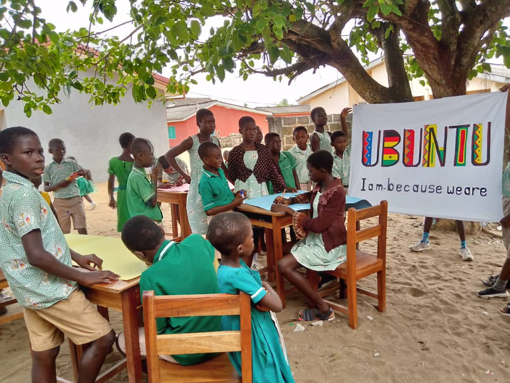
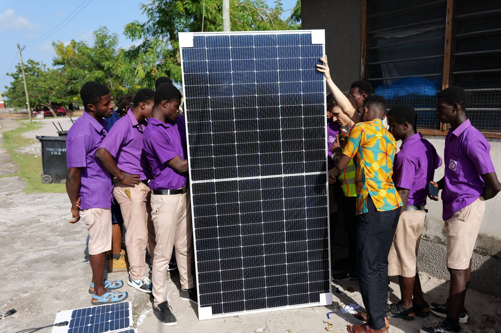

 


In der Zeit vom 21.-25. November 2023 war es David Bittner von NaBiG e.V. mit drei weiteren Kollegen möglich, unser gemeinsames Solarprojekt für die St. Luke's Vocational School erfolgreich zum Abschluss zu bringen. Dank unserer Kabelsammlung mit Hilfe der "Lokalen Agenda 2030" in Schweinfurt und der Unterstützung durch die Diözese Würzburg fiel am Ende die Solaranlage um 25% größer aus ursprünglich geplant.



Neben der Installation fanden auch an drei Tagen auch Solarschulungen statt. Es wurden 18 Schüler*innen und zwei Lehrkräfte geschult. Der Umfang der Schulungen betrug 9 Stunden Theorie und ca. 12 Stunden Praxis, da die Schüler*innen bei dem Aufbau der Anlage aktiv mit einbezogen wurden.


Bischof Attakruh von der Diözese Sekondi-Takoradi hat es sich nicht nehmen lassen, persönlich nach Eikwe zu reisen, um Team NaBiG und dem P-Seminar des Walther-Rathenau-Gymnasiums Schweinfurt seine Wertschätzung auszudrücken. Wir freuen uns in Schweinfurt und Eikwe über unseren gemeinsamen Erfolg und danken all unseren Unterstützern für ihr Vertrauen!